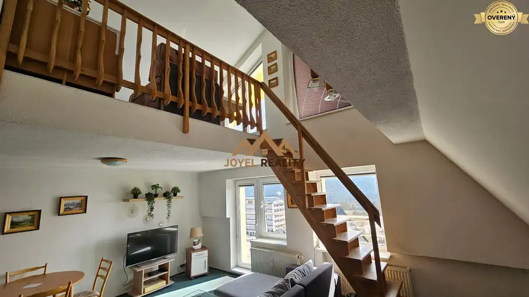
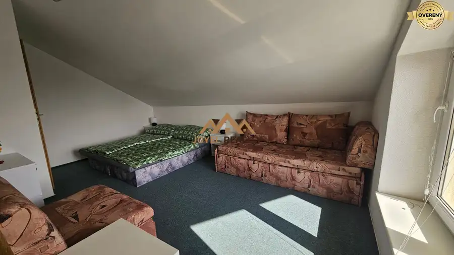
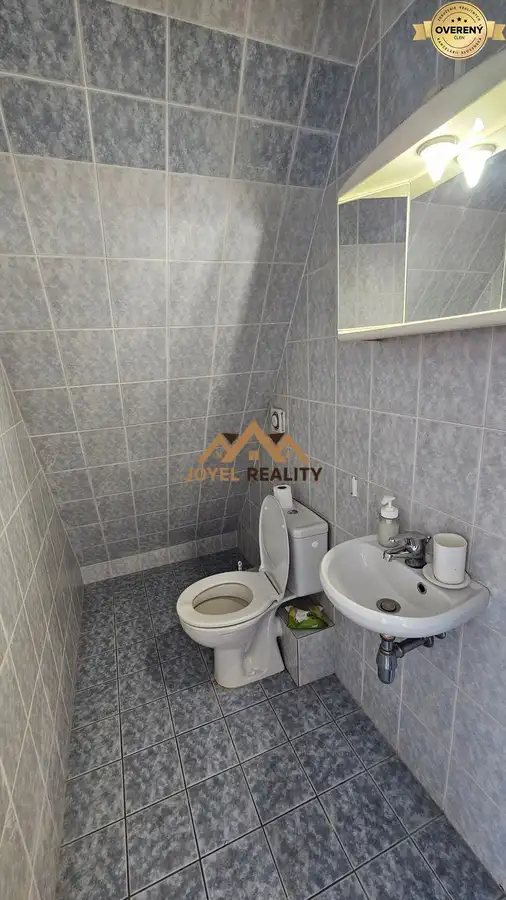
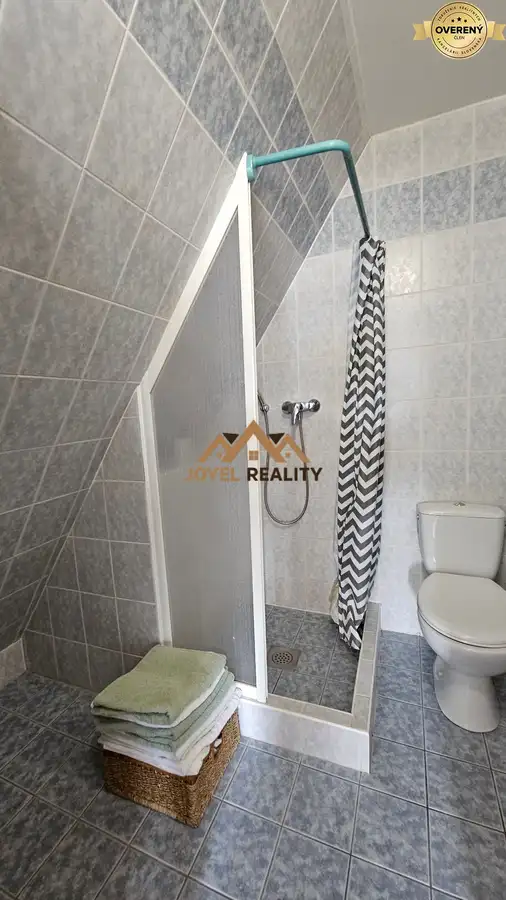
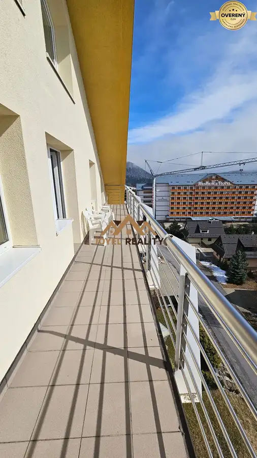
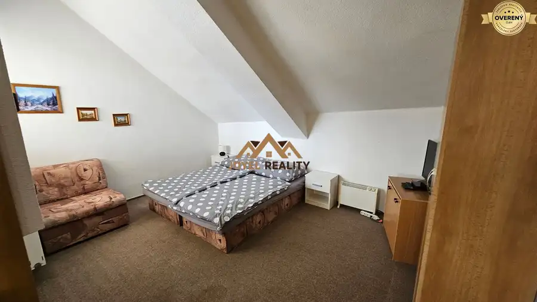

Na predaj 4 apartámny v obci Donovaly
Donovaly







- Dispozícia5-izbový
- Plocha150 m²
- Poschodie5. z 5
- Stavpôvodný
- Vlastníctvoosobné
O nehnuteľnosti
Hľadáte investičné apartmány a jedným z Vašich kritérií je, že majú byť v centre lyžiarskeho strediska? Chcete si užívať výhody, ktoré lyžiarske stredisko ponúka a mať naozaj všetko nablízku? A dokonca bez problému zaparkovať? Hovoríte nemožné? A predsa áno. Máme pre Vás ideálnu investičnú príležitosť v srdci obce Donovaly.
O NEHNUTEĽNOSTI:
Realitná kancelária Joyel reality Vám exkluzívne ponúka na predaj 4 apartmánové byty a to 3 jednoizbové apartmány a 1 dvojizbový apartmán v centre obce Donovaly v bytovom dome ALMET.
Byty sa nachádzajú na piatom poschodí z piatich. Sú jedinečné tým že celé poschodie bude patriť len Vám a výťah máte priamo až na vaše poschodie.
Na predaj apartmánov - (bytov) sa môžeme pozrieť ako na výbornú investičnú príležitosť. Štyri apartmány pod jednou strechou, sú zariadené a vybavené, ideálne k okamžitému nasťahovaniu - (prenajímaniu) a ak by bol váš zámer ich prenájom, sú na to ako stvorené. Predurčuje ich na to výmera aj poloha priamo v centre lyžiarskeho strediska Donovaly, avšak bez ruchu hlavnej cesty a parkovanie priamo pri bytovom dome.
Rozloženie bytov:
BYT č. 1
Celková plocha bytu je 18,18 m2. Vstupujeme priamo do izby ktorej rozmer je 8,06 m2 a z nej do kúpelne, ktorá má 3,16 m2. Výhodou tohto bytu je šatník o veľkosti 6,96 m2.Byt je kompletne vybavený malou kuchynkou a spotrebičmi, s dostatkom úložného priestoru a plochou pre varenie.
BYT č. 2
Celková plocha tohto bytu je 68,96 m2. Vstupujeme do predsiene o výmere 3,06 m2 a z nej do otvoreného, slnečného priestoru kuchyne a obývacej izby, ktorá má rozmer 30,75 m2. Je kompletne vybavená spotrebičmi, s dostatkom úložného priestoru a plochou pre varenie.Z tejto slnečnej obývacej miestnosti sa dostaneme na priestranný balkón kde si môžete vychutnať rannú kávu a pokochať sa s prekrásnym výhľadom na celé lyžiarske stredisko Donovaly. Z obývacej miestnosti sa dalej dostaneme do murovanej kúpeľne so sprchovacím kútom s toaletou /5,43m2/. Ďalej po schodoch do jednej izby, v mezonetovom poschodí s rozlohou 19,63 m2 a so samostatným WC /1,75 m2/.
BYT č. 3
Byt č. 3 má rozlohu 24,63 m2. Vstupom sa dostávame priamo do otvorenej a presvetlenej izby s malým kútikom pre kuchynku o výmere 21,15 m2 a z nej do kúpeľni so sprchovacím kútom s toaletou v rozmere /3,48 m2/.
BYT č. 4
Byt č. 4 má rozlohu 52,87 m2 a tiež veľmi príjemný benefit, balkón o rozlohe 8,59 m2.
Vstupujeme opäť do predsiene s rozlohou 2,20 m2, z nej do komfortnej otvorenej obývacej časti s kuchyňou o rozlohe 33,81 m2. Priestor je pekne prepojený s oddelenou časťou pre spací priestor. Pár detailov a bývanie si prispôsobíte svojmu vkusu.
Z obývacej izby máme výstup na priestranný slnečný balkón, kde Vám ranná káva s úžasným výhľadom na lyžiarske stredisko bude zaručene chutiť.
Kúpeľňa so sprchovým kútom a toaletou je murovaná, o rozlohe 4,25 m2.
Veľkým plusom nehnuteľností sú 3 parkovacie miesta hneď vedľa bytového domu a v suteréne sú priestranné pivnice, ktoré vám môžu poslúžiť na úschovu vašich vecí napr: lyžiarska výstroj , sánky, turistické palice a iné...
LOKALITA:
Predávané nehnuteľnosti sa nachádzajú v centre obce Donovaly na skok od všetkých obchodov a služieb. Veľké detské ihrisko či reštaurácie v okolí Vás zaručene potešia.
Rozprávkový park Habakuky, donovalkovo, adrenalínovú fun arénu s bobovou dráhou a lezeckými aktivitami nájdete len kúsok od tohto apartmánového domu ,,ALMET,, čo poteší rodiny s deťmi.
Okolitá príroda Veľkej Fatry a Nízkych Tatier Vám ponúka výborné turistické trasy a veľmi známe lyžiarske stredisko Park Snow Donovaly so zjazdovkami na záhradišti a Novej Holi.
Cena týchto nehnuteľností je: 428.000,-€
V cene nehnuteľnosti je provízia pre RK a kompletný právny servis - od vyhotovenia kúpnych zmlúv až po protokolárne odovzdanie nehnuteľnosti vyhotovenia zmluvnej dokumentácie k prevodu nehnuteľnosti (kúpna zmluva, návrh na vklad do katastra nehnuteľností).
Zabezpečíme Vám bezplatné hypotekárne poradenstvo a pomôžeme s najlepšími podmienkami získania hypotéky na trhu.
Obhliadky Vám sprostredkujeme kedykoľvek. Pre viac informácií prosím kontaktujte makléra: Bc. Lucia Kanišová, tel.č., e-mail:
Parametre
- Celková rozloha
- 164.04 m²
- Úžitková plocha
- 150 m²
- Poschodie
- 5/posledné poschodie
- Počet poschodí
- 5
- Počet izieb
- 5
- Vlastníctvo
- osobné
- Stav
- pôvodný
- Status
- aktívne
- Odvoz odpadu
- áno - separovaný
- Plyn
- nie
- Internet
- lokálny poskytovateľ
- Kúpeľňa
- áno
- Balkón
- áno
- Pivnica
- áno
- Garáž
- nie
- Výťah
- áno
- Parkovanie
- áno
- Postavené z
- Ytong
- Zariadenie
- zariadený
- Klimatizácia
- nie
- Káblová televízia
- nie
- Energetický certifikát
- nie
- Bezbariérový prístup
- nie
- Okná
- plastové
- Dátum zverejnenia
- 2025-03-31